polarj sapkota
portfolio.
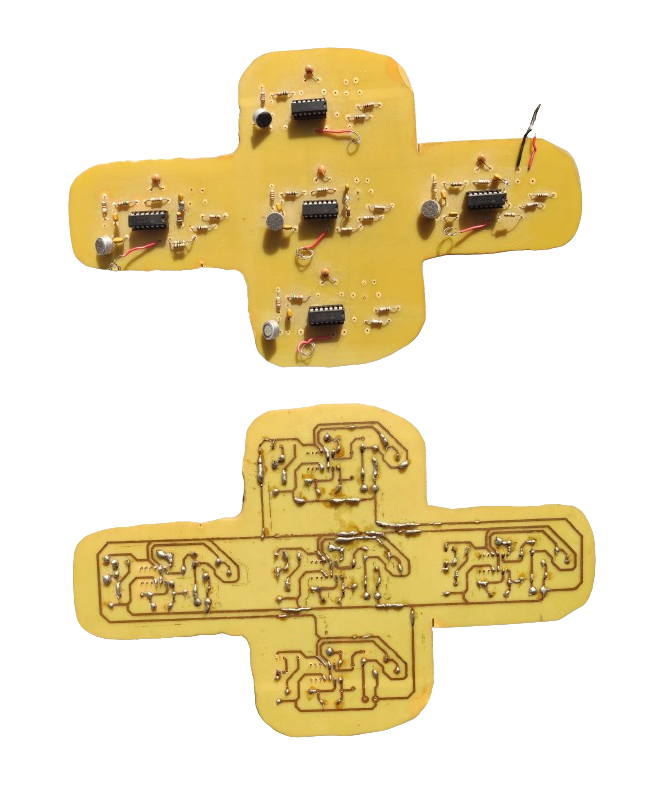
Technology
- Binaural recording microphone array
- Multi-axis haptic-feedback Joypad
- Real-time thermal rating: Power lines
- Multi-level security system
- Battery level indicator
- Path-planning rover

Image Processing
- Edge-detection suite
- Histogram equalization
- SVD compression analysis
- Temperature changing kernel
- Customizable DFT matrix
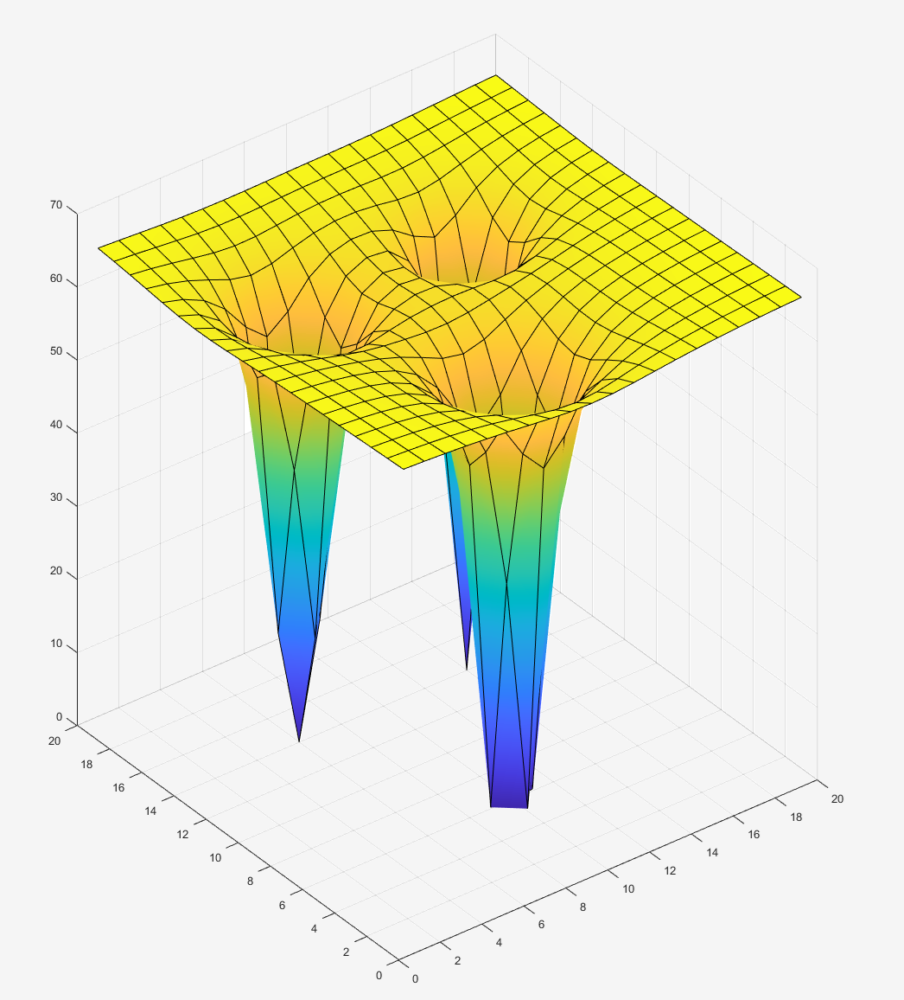
Optimization
- F1 game performance optimization
- NPN-BJT VBE optimization
- Ackermann gain & observer design
- Switching-noise redux power elec
- MIMO channel power optimization
- Root variation as a f(R,L,C)
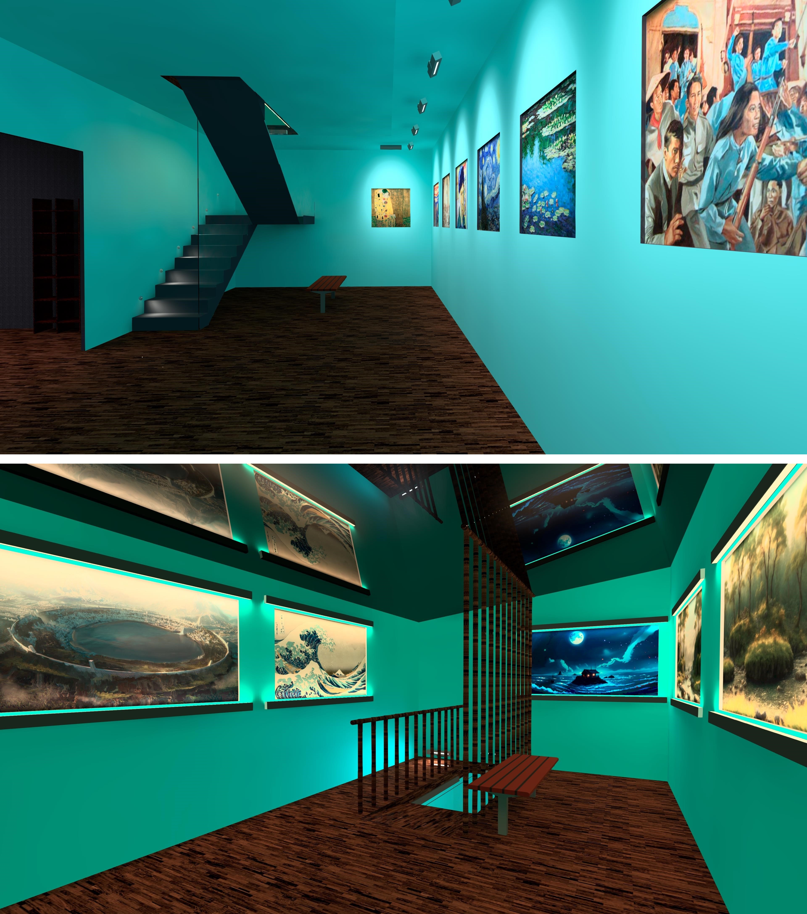
Lighting Design
- RGB Themed Gallery
- Lighting intervention – Basantapur
- KU ring road lighting case study
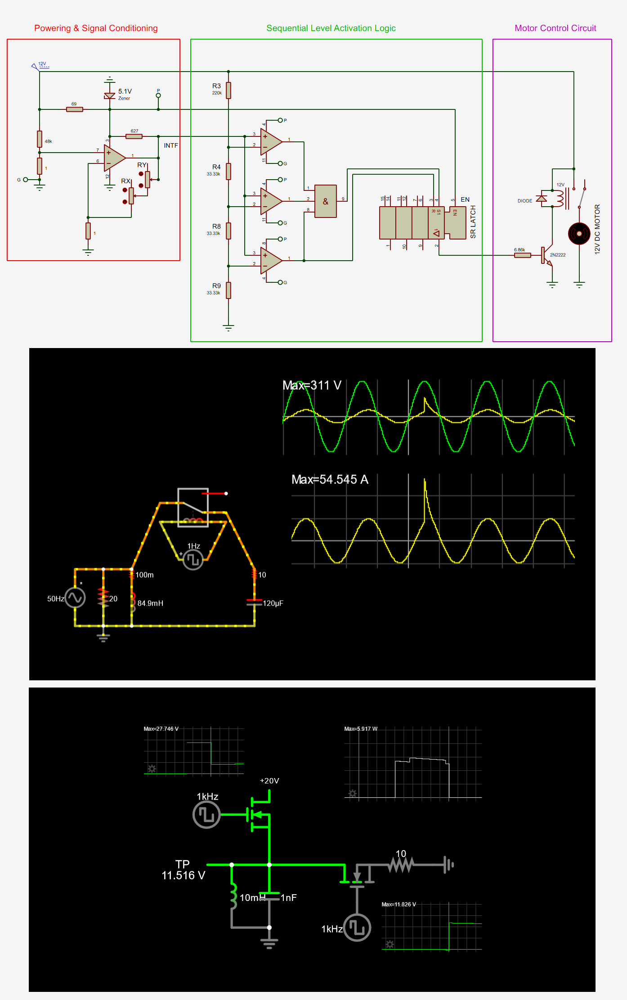
Power Electronics
- Static-VAR compensator
- Switched PFC reactor
- Novel current source
- Simplest resonant converter
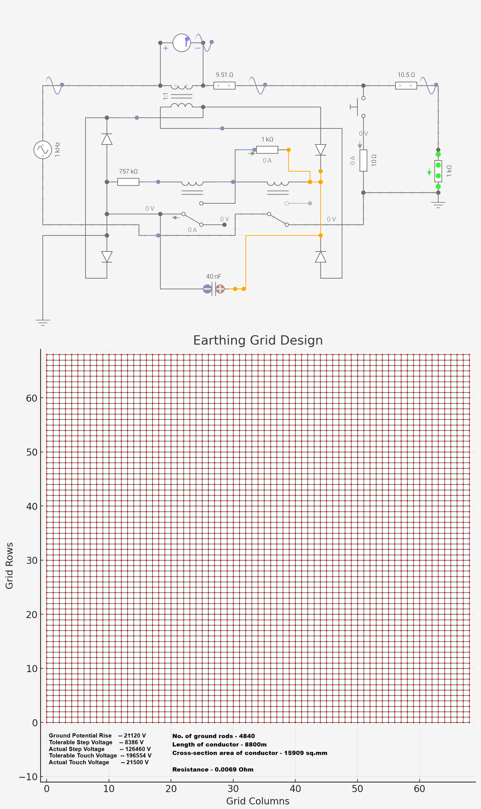
Power Systems
- Overcurrent protection design
- Detailed transmission line design
- Detailed switchgear design
- Detailed grounding design
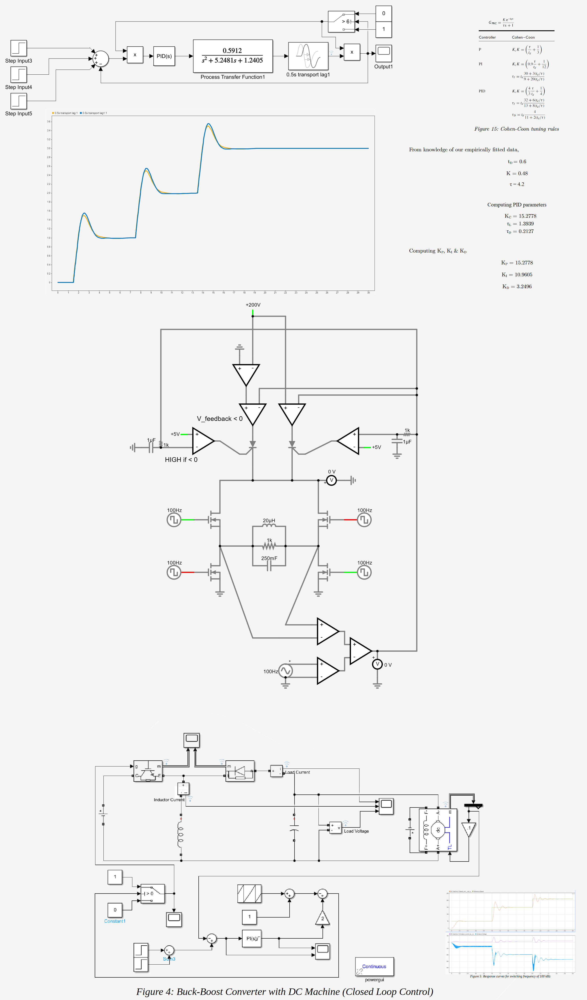
Control Systems
- Voltage-controlled inverter
- Dye-injection control system design
- Closed loop boost converter loaded with a DC-machine
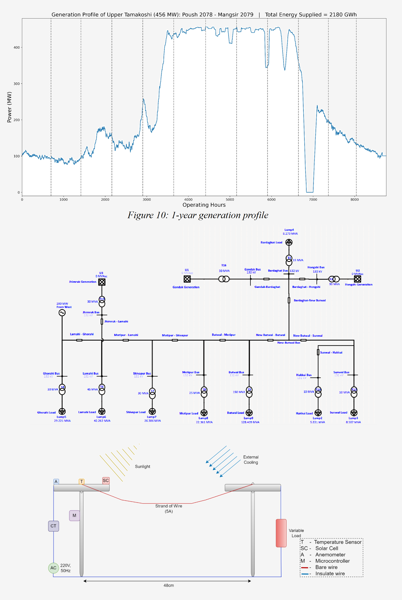
Power Systems Analysis
- Fault analysis
- Load-flow/contingency study
- HVDC protection literature review
- Power converter characteristics with closed-loop control
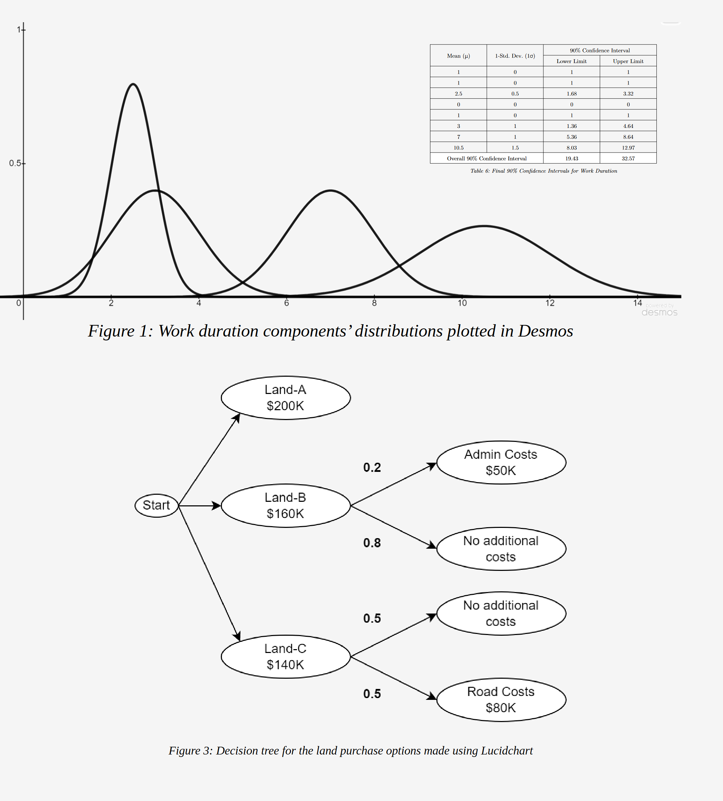
Industrial Project Management
- Food processing plant & boiler installation report
- Industrial warehouse construction report
- UTKHPL detailed plant study
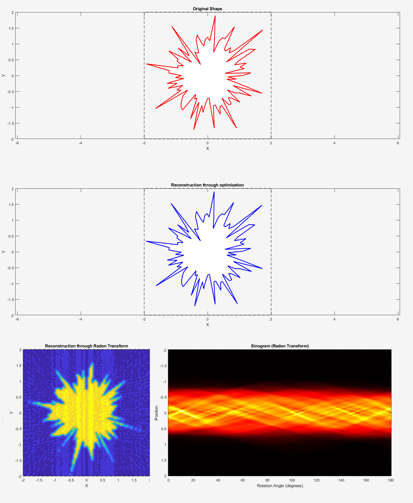
Concepts
- Under-sampling algorithm for channel data recovery
- Image reconstruction from radiated emissions
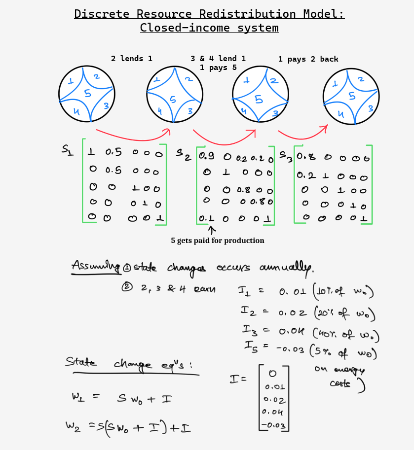
Economic Models
- Discrete wealth redistribution model
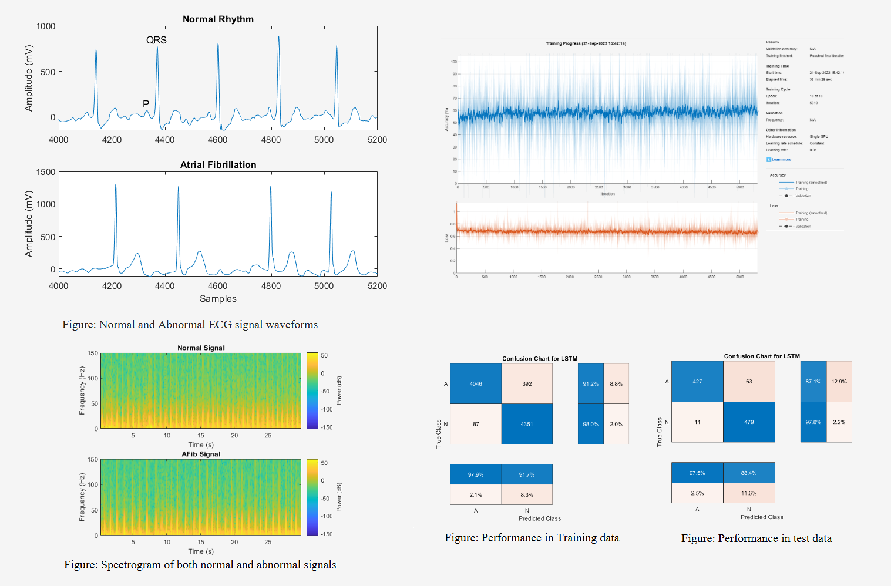
ML Models
- Heartbeat anomaly detection